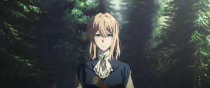
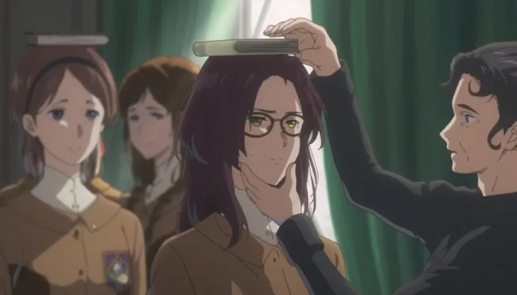
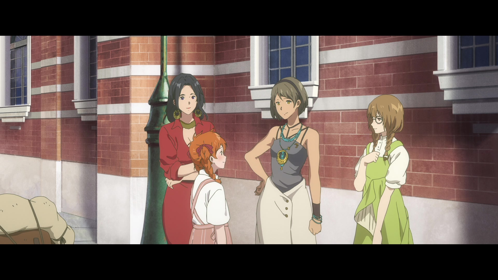
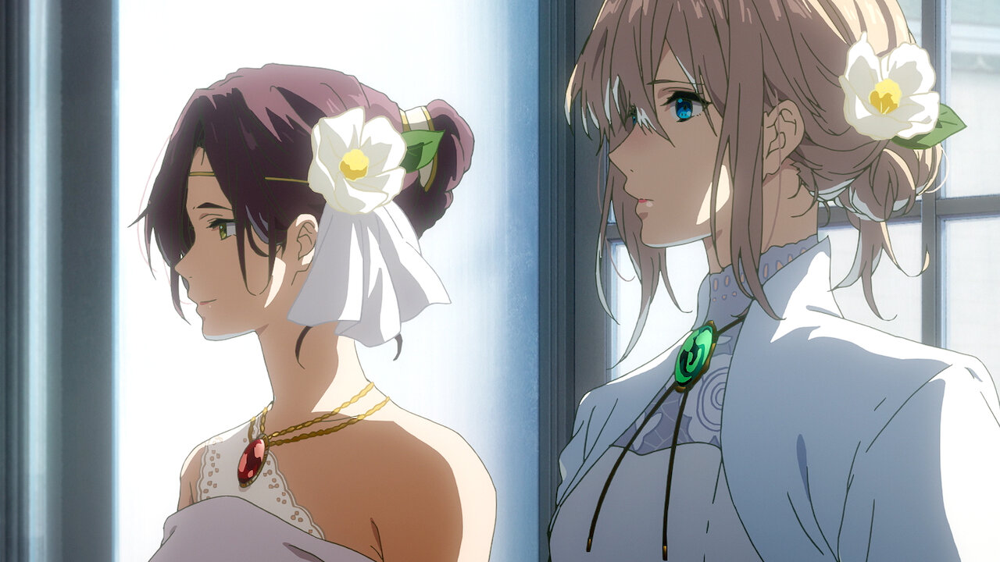

Violet Evergarden: Eternity and the Auto Memory Doll
Violet Evergarden es enviada a un prestigioso internado femenino a petición de la familia real Drossel para ayudar a una de las estudiantes, Isabella York, en su formación como debutante. A medida que Violet acompaña a Isabella, queda claro que no le gusta asistir a la escuela, ya que le resulta difícil encajar y no tiene interés en aprender ninguna de las habilidades requeridas para un debutante. Tampoco goza de buena salud, ya que sufre ataques de tos periódicos. Al principio, Isabella desconfía de Violet, pero la acepta más cuando se da cuenta de que Violet no está interesada en su estatus aristocrático. Más tarde, Isabella le revela a Violet que ella era Amy Bartlett, una hija ilegítima de la familia York. Solía vivir en la pobreza y adoptó a una huérfana, Taylor, como su hermana menor. Sin embargo, la familia York la localizó más tarde y le pidió que se uniera a la familia, prometiendo una vida mejor para Taylor a cambio. Al darse cuenta de que no podía cuidar adecuadamente de Taylor, Isabella aceptó a regañadientes. Isabella luego le pide a Violet que escriba una carta para Taylor. Con su trabajo hecho, Violet regresa a Leiden. Benedict Blue entrega la carta a Taylor, que ahora vive en un orfanato.
Tres años más tarde, Taylor se dirige a Leiden para encontrar la Compañía Postal CH, donde finalmente conoce a Violet y le pide trabajar como cartero. Aunque se muestra reacia a contratar a un niño, Claudia Hodgins acepta la solicitud de Violet de dejar que Taylor trabaje en la empresa hasta que pueda organizar su regreso a su orfanato, y asigna a Benedict para entrenarla. Después de llevar a Taylor a lo largo de su ruta, Benedict se da cuenta de que Taylor no puede leer, lo que significa que no podría leer las direcciones de las cartas. Violet entonces decide enseñarle a Taylor. Al día siguiente, Violet lleva a Taylor a una nueva ruta de entrega. Taylor le dice a Violet que quiere ser cartero para poder "entregar felicidad", tal como lo hizo Benedict cuando le entregó la carta de Isabella. Violet luego ayuda a Taylor a escribir una carta a Isabella, y Benedict acepta localizarla para entregársela. Benedict obtiene una motocicleta nueva de Hodgins y lleva a Taylor con él para encontrar a Isabella. Benedict entrega la carta, pero Taylor decide no reunirse con ella todavía hasta que se convierta en una verdadera cartera para que pueda entregar sus cartas ella misma. Taylor es adoptada más tarde por la familia Evergarden, mientras que Violet y Benedict continúan su trabajo.
Galeria



